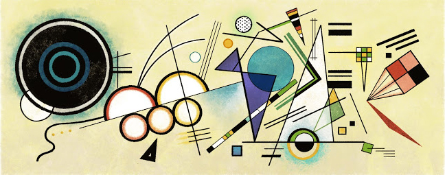

<header class="nav-bar">
	<a href="index.html" class="nav">< Back</a>
</header>
<section class="container">
	<h3>Kandinsky</h3>
</section>
<button id="btn-shrink">Shrink</button>
<button id="btn-rotate">Rotate</button>
<svg width="1270px" height="1000px">
	<!-- <rect class="box" x="0px" y="100px" width="150px" height="150px" /> -->

	


	<circle cx="370px" cy="302px" r="80px" fill="black" />
	<circle cx="370px" cy="302px" r="70px" fill="white" stroke="red" stroke-width="7"/>
	<circle cx="517px" cy="259px" r="80px" fill="black" />
	<circle cx="517px" cy="259px" r="70px" fill="white" stroke="#E48F2E" stroke-width="7"/>
	<rect x="100px" y="393px" width="500" height="200" fill="white" style="transform: rotate(-16deg);"/>

	<circle cx="176px" cy="170px" r="140px" fill="black" />
	<circle cx="176px" cy="170px" r="125px" stroke="#EED9C0" stroke-width="10" />
	<circle cx="176px" cy="170px" r="65px" stroke="#305D76" stroke-width="10" /> 
	<circle cx="176px" cy="170px" r="40px" stroke="#469E9E" stroke-width="10" /> 
	
	<circle cx="379px" cy="344px" r="43px" fill="black" />
	<circle cx="379px" cy="344px" r="33px" fill="white" stroke="#E48F5A" stroke-width="7"/>
	<circle cx="455px" cy="323px" r="43px" fill="black" />
	<circle cx="455px" cy="323px" r="33px" fill="white" stroke="#E48F2E" stroke-width="7"/>
	<circle cx="531px" cy="300px" r="43px" fill="black" />
	<circle cx="531px" cy="300px" r="33px" fill="white" stroke="#ECE068" stroke-width="7"/>

	<line x1="470" y1="50" x2="568" y2="425" stroke="black" stroke-width="3" />
	<line x1="220" y1="346" x2="693" y2="210" stroke="black" stroke-width="2" />

	<circle cx="770" cy="175" r="66px" fill="#469E9E" stroke="black" stroke-width="2" />

	<line x1="530px" y1="359px" x2="595px" y2="346px" stroke="black" stroke-width="3" />
	<line x1="533px" y1="372px" x2="598px" y2="360px" stroke="black" stroke-width="3" />
	<line x1="536px" y1="386px" x2="601px" y2="373px" stroke="black" stroke-width="3" />

	<line x1="562px" y1="197px" x2="611px" y2="36px" stroke="black" stroke-width="2" />
	<line x1="570px" y1="207px" x2="619px" y2="39px" stroke="black" stroke-width="2" />
	<line x1="577px" y1="216px" x2="628px" y2="42px" stroke="black" stroke-width="2" />

	<rect x="1019px" y="114px" width="14px" height="14px" fill="white" stroke="black" stroke-width="2" />
	<rect x="1033px" y="114px" width="14px" height="14px" fill="teal" stroke="black" stroke-width="2" />
	<rect x="1047px" y="114px" width="14px" height="14px" fill="yellow" stroke="black" stroke-width="2" />
	<rect x="1019px" y="128px" width="14px" height="14px" fill="teal" stroke="black" stroke-width="2" />
	<rect x="1033px" y="128px" width="14px" height="14px" fill="yellow" stroke="black" stroke-width="2" />
	<rect x="1047px" y="128px" width="14px" height="14px" fill="teal" stroke="black" stroke-width="2" />
	<rect x="1019px" y="142px" width="14px" height="14px" fill="yellow" stroke="black" stroke-width="2" />
	<rect x="1033px" y="142px" width="14px" height="14px" fill="teal" stroke="black" stroke-width="2" />
	<rect x="1047px" y="142px" width="14px" height="14px" fill="white" stroke="black" stroke-width="2" />
	<line x1="1033px" y1="156px" x2="1039px" y2="241px" stroke="black" stroke-width="2" />
	<line x1="1047px" y1="156px" x2="1039px" y2="241px" stroke="black" stroke-width="2" />

	<rect x="775px" y="800px" width="46px" height="46px" fill="red" stroke="black" stroke-width="3" style="transform: rotate(-37deg)"/>
	<rect x="821px" y="800px" width="46px" height="46px" fill="orange" stroke="black" stroke-width="3" style="transform: rotate(-37deg)"/>
	<rect x="821px" y="846px" width="46px" height="46px" fill="black" stroke="black" stroke-width="3" style="transform: rotate(-37deg)"/>
	<rect x="775px" y="846px" width="46px" height="46px" fill="orange" stroke="black" stroke-width="3" style="transform: rotate(-37deg)"/>
	<line x1="1101px" y1="172px" x2="1046px" y2="266px" stroke="black" stroke-width="2" />
	<line x1="1115px" y1="190px" x2="1046px" y2="266px" stroke="black" stroke-width="2" />
	<line x1="1131px" y1="207px" x2="1046px" y2="266px" stroke="black" stroke-width="2" />
	<line x1="1144px" y1="228px" x2="1046px" y2="266px" stroke="black" stroke-width="2" />
	<line x1="1158px" y1="246px" x2="1046px" y2="266px" stroke="black" stroke-width="2" />

	<circle cx="554px" cy="141px" r="15px" fill="white" stroke="teal" stroke-width="2px" />
	<circle cx="649px" cy="101px" r="13px" fill="#ECB47D" stroke="#D88D03" stroke-width="3px" />

	<line x1="937px" y1="45px" x2="1004px" y2="45px" stroke="black" stroke-width="7" />
	<line x1="937px" y1="71px" x2="1004px" y2="71px" stroke="black" stroke-width="16" />


	<!-- <polygon points="440,370 250,190 160,210" style="stroke: black; stroke-width:5;" /> -->


	<!-- Can use:
		rect
		circle
		ellipse
		line
		polyline
		polygon
		path
	 -->

	 <script>

	 var shrink = d3.select('#btn-shrink');
	 var rotate = d3.select('#btn-rotate');


	 shrink.on('click', function() {
	 	d3.selectAll('svg').style("transform", "scale(.5)")
	 }); 

	 rotate.on('click', function() {
	 	d3.selectAll('svg').style("transform", "rotate(20deg)")
	 }); 


	 </script>
</svg>
<!--  -->